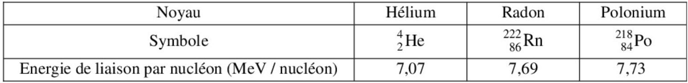

Prenez votre temps avant de repondre aux questions suivantes
Partie 1 : Chimie
Question 1 - Un acide au sens de Bronsted :
Question 2 - En se basant sur le graphe suivant, donner le temps de demi‐réaction t1/2 correspondant :
Question 3 - Quel est le nom de l'ester suivant ?
Question 4 - D'un point de vue chimique, la quantite d'electricite Q fournie par une pile quelconque pendant une duree determinee , est exprimee par :
A titre de rappel : n(e-) est la quantite de matiere echangee durant le fonctionnement de la pile pendant une duree determinee, et F est la valeur absolue de la charge d'une mole d'electrons
Question 5 - La reaction de dosage d'une espece chimique quelconque est :
Question 6 - On realise un dosage pH-metrique d'une solution basique d'ammoniac NH3 par une solution aqueuse d'acide chlorydrique (H3O+ + Cl-).
On obtient a l'equivalence le pH egale a 6,0. L'indicateur colore adequat pour realiser ce dosage est :
Partie 2 : Ondes
Question 7 - La perturbation a un point M Ym a l'instant t est egale a la perturbation qui existait auparavant a la source S Ys quand :
A titre de rappel : τ = SM/V est le retard temporel, tel que SM la distance entre S et M, et V la vitesse de propagation.
Question 8 - L'expression de l'angle de diffraction θ en fonction de la longueur d'onde λ et la largeur de fente a est :
Question 9 - La courbe ci-dessous represente une coupe verticale de la surface de l'eau a l'instant t.
La regle graduee sur le schema represente l'echelle utilisee.
La longueur d'onde est :
Partie 3 : Nucleaire
Question 10 - Le tableau ci-dessous represente l'energie de liaison par nucleon de certains noyaux.
le noyau le plus stable parmi les noyaux presentes dans le tableau est :

Question 11 - La relation entre la demi-vie t1/2 d'un echantillon radioactif et la constante radioactive λ est :
Question 12 - Cette radioactivite correspond a l'emission d'un positron. Il s'agit d'une radioactivite :